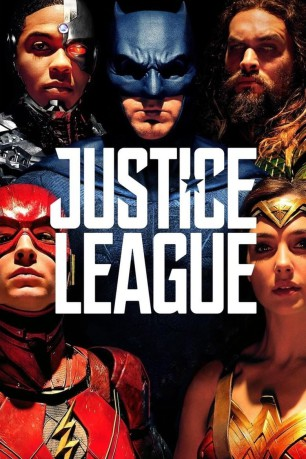

 
 IMDB-Wertung: 6.5 / 10
IMDB-Wertung: 6.5 / 10  Tomatometer: 40
Tomatometer: 40  Metascore:
Metascore: 
Angetrieben durch sein neu aufgestelltes Vertrauen in die Menschheit und beeindruckt von Supermans selbstloses Handeln, holt Bruce Wayne die Hilfe seiner neu entdeckten Verbündeten Diana Prince ein, um einem noch stärkeren Gegner gegenüberzutreten. Zusammen machen sich Batman und Wonder-Woman an die Arbeit ein Team von Metamenschen zu finden und rekrutieren, um sich der neuen dunklen Gefahr zu stellen. Aber trotz (der Formierung) dieses bisher nie dagewesenen Bündnisses von Helden - Batman, Cyborg, Aquaman, Wonder Woman und The Flash - ist es vielleicht schon zu spät, um den Planeten vor einem Angriff katastrophalen Ausmaßes zu bewahren.
Jahr: 2017
Dauer: 120 Minuten
FSK: 12
Land: USA Studio: Warner Bros.Tonspuren: DTS - ,
Untertitel: Deutsch,
Auflösung: 1080p (1920x1080) Größe: 11878 MB
Genre: Action, Sci-Fi, Abenteuer, Fantasy
Regisseur:
Drehbuch: Chris Terrio
Soundtrack: Danny Elfman
Darsteller:
Datei: X:\Comic-Filme\Justice League (2017, FSK12, 1920x1080) 3D.mkv seit 07.03.2018
Festplatte: Comicverfilmungen+MusikCD
 Es gibt insgesamt 44 Filme in der Gruppe 'Comic-Filme'
Es gibt insgesamt 44 Filme in der Gruppe 'Comic-Filme'